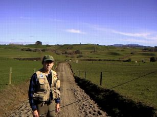
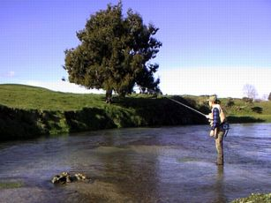

釣行日誌 ＮＺ編
望郷のドライフライ
2001/07/23(MON)
約一年もの長い間、ニュージーランドを釣り歩いていたカズ君が、ハミルトンに立ち寄ってくれることになった。彼とは、ニュージーランド関連のメーリングリストで知り合い、インターネットの上では、お互いのホームページをのぞいたり、釣り関係の情報を交換したりしたのであるが、これまで一度も会ったことがなかったのである。
晴れた月曜日の昼過ぎ、待ち合わせ場所に決めた大学の駐車場前には、白色のデカいパジェロが止まっており、偏光サングラスをかけたカズ君が立っていた。
いやぁやぁということでそそくさと自己紹介のようなものを交わし、彼の車を Warehouse の駐車場に止め、釣り具を私の車に移し替え、いそいそと南へ向かう。カズ君と私は出身地が近いこともあり、懐かしい地名のちりばめられた方言混じりの会話を楽しんでいると80kmの道のりはあっという間だった。
例によってジョーンズさんの家の敷地に車を止めさせてもらい、身支度をして、なだらかな農道を、いつものようにスプリングクリーク目指して降りて行く。下り坂の向こうに青空を反射した緩やかな碧色の流れを見ると、自然と足が早まる。上り坂でも同じだろうが。

これだけ天気が良ければ、ことによるとドライフライにライズしている鱒が見られるかも知れないねと、カズ君に話す。北島、南島、あちらこちらを流れ歩いて釣りまくった彼は、手際よく釣り支度を整え、合流点の淵から冷たい冬の流れに立ち込んだ。冷たい、と言っても、今日の水温は12℃ほどもあり、気温とほぼ同じくらいである。
彼は、淵のおしまいから慎重に釣り始め、指でつまんで置くようにして、遠くの流れ出しから足元の藻の際まで、思ったところにテンポよくニンフを打ち込んでゆく。
よく、釣りの雑誌などに、釣り歴○○年とか、フライフィッシング歴△△年とか書いてあるのを見かける。しかし、カズ君の釣りをこうして岸から見ていると、こうした「釣り歴何年、何十年」という表現も、長ければスゴイというものでは無いなぁ、とつくづく思い知らされる。
ワタシにしたところが、年数だけで言えば、もう10年以上色つきの長い釣り糸を振り回して来た勘定になるが、カズ君のフライフィッシング歴は、おそらく５年に満たないであろう。
都会のサラリーマンが、渓流で釣りを楽しめるのは、まぁ大体３月～10月までの８ヶ月間、家庭と世間のしがらみをクリアーしつつ、毎週土日に出かけたとして、週に２日、月に８日～10日間、１年でせいぜい80日が精一杯である。これに比して、カズ君の場合、若者ならではの気力と体力、ニュージーランドへのワーキングホリデービザという奥の手を駆使してこの一年、おそらくは300日以上釣りまくったのであろうからして、日本の普通の勤め人の４年分の経験を積んだことになる。
かてて加えて釣り場が違う。一日の釣行で巡り会える魚の数、大きさ、コンディションというものを日本とニュージーランドとで較べたら、ひょっとしたら1:50とか、1:100ぐらいの差があるかも知れない。
南島はゴアの近郊の川で釣った10ポンドオーバーのブラウンを抱えたカズ君の写真を見ているだけに、「見稽古」といった気分で彼の釣りを目で追うことにする。特徴ある手つきで小さなダブルホールを行いながら、きっちりと近距離のキャストを行う彼のキャスティングを見ていると、上手な人の釣りを見ることが、いかに勉強になるかがよくわかる。
「ツバメが飛んでますね！」
カズ君が、期待のこもった声で呼びかける。惚れ惚れするようなスピードで低く飛びながら、川底から羽化してくる虫たちを狙ってツバメたちが水面を往復している。目を凝らして見ていると、薄いクリーム色の、サイズにすれば14番くらいのダンが飛んでいる。これは、もしや........。
二つの川の流れがぶつかっている淵では、なんの変化も見られず、カズ君はさらに上流を狙って釣り上がる。私も、カズ君の後から川に紛れ込み、彼の釣り残した右岸のへちを狙ってみる。
「ピシャッ」
ライズが起こった。派手な水しぶきからするとあまり大きくはなさそうであるが、二人の心を波立たせるには十分である。
「出ましたねぇ」
「居ますねぇ」

それほど大きくはないヒバの木の下、淵の尻からちょっとした深みに移るポイントで、おちゃっぴいのレインボートラウトが羽虫を狙っているようだ。これなら今日の午後は、ドライで通してみるか？
草の際を流していたカズ君のフライに飛沫が上がり、彼の竿がしなり、レインボーがこましゃくれたファイトを見せる。
「ああ～っ！ ドライで釣ったぁ 久しぶりィィィ！」
彼の５番ロッドではかなり物足りなさそうな鱒ではあったが、真っ青な冬晴れの空の下、鱒が跳ねるたびにカズ君の笑顔が水面にこぼれた。
「やっぱ、ドライはいいなぁ！」
ゴアのトロフィーブラウンと思えば、それこそ50:1くらいの重さしかないワイカトのちびっ子レインボーであったが、彼の喜びの声を聞くと、ここまでご足労願った甲斐があってほっとした。
その後、日が傾き、頬がひりひり冷えてくるまで、カズ君とスプリングクリークの釣りを楽しんだ。あいにく今日は、浅瀬で定位している大物レインボーの姿は見ることができなかったが、開けた浅瀬では、立て続けにちびっ子ニジマスたちが相手をしてくれた。
彼のふるさと訛りを聞きながら、まだパーマークの残る魚体に触れた時、朱点鮮やかなアマゴたちのことを思い出した。
釣行日誌ＮＺ編 目次へ
サイトマップ
ホームへ
お問い合わせ